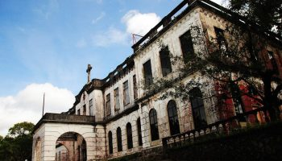
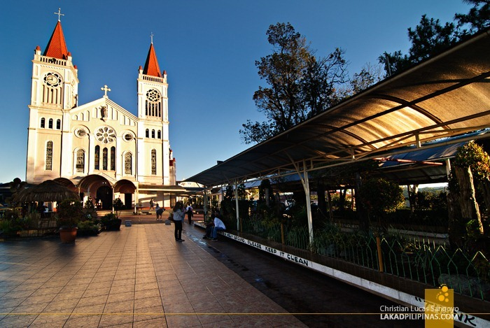
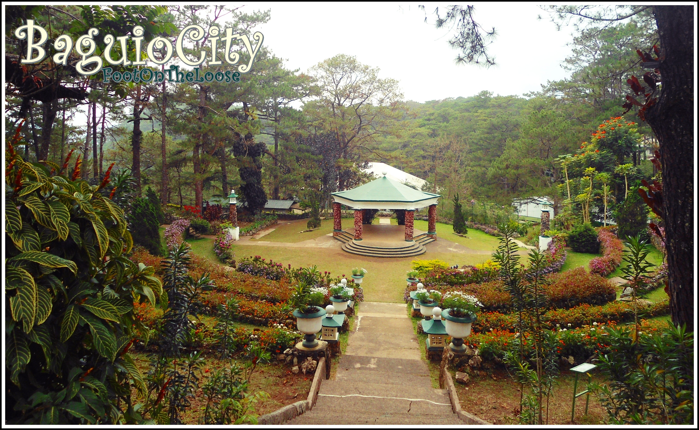
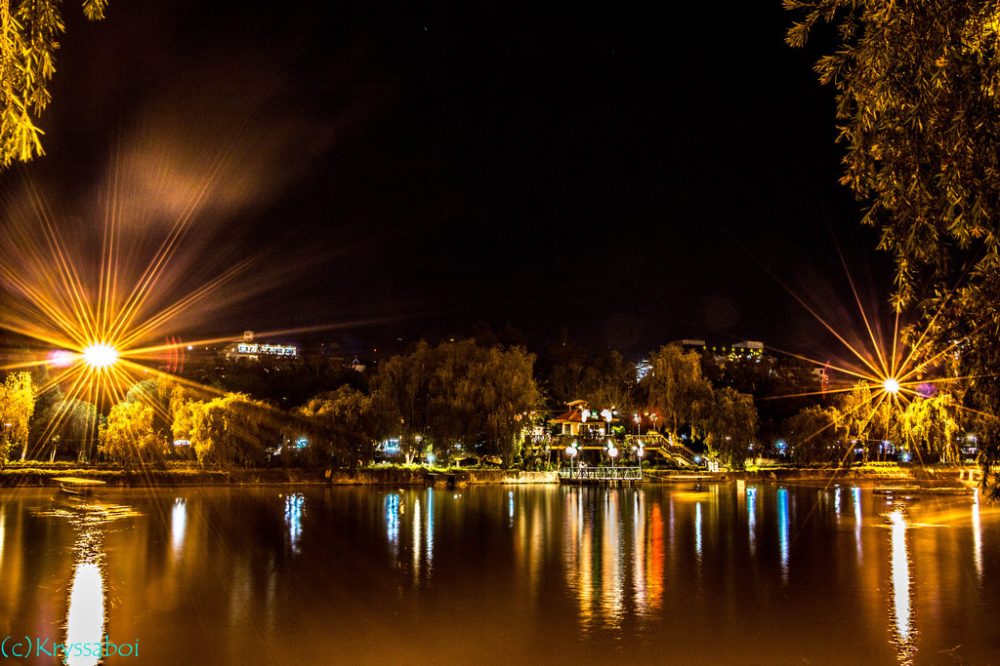

DIPLOMAT - "this is another place you would wanna set your eyes on. Found in Dominican Hill are the Diplomat Hotel Ruins which is an old abandoned building used to be a first class hotel in the city and the World’s Largest 10 Commandments plus a panoramic view of the entire Baguio City."
THE MANSION -"Located across the Wright Park, the Mansion is the official summer residence of the President of the Philippines. It’s pretty small as compared to the Malacanang Palace, but it doesn’t seem any less elegant with its white edifice fronted by a beautiful gate which would definitely grab your attention."

CATHIDRAL -"Built in the 1920, this great piece of architecture with its pink exterior, stained glass and massive twin spires was dedicated to the Blessed Virgin Mary hence the name Our Lady Of Atonement Cathedral. Located adjacent to Session Road, this is one of Baguio’s major tourist spots."
CAMP JOHN HAY-" is what made Baguio the “Little America”. During most of the 20th century, it was used as the recreational facility for the U.S. Armed Forces. Although many parts of the camp has been changed when it was converted into a privately owned resort, it is still famous to tourists for the history the Americans left within it. Among these are the Bell House & Bell Amphitheater which are the works of art of the late Governor-General James Franklin Bell. The Secret Garden which was JF Bell’s personal space is now famous as the place perfect for wedding proposals. Here also found the well visited Butterfly Sanctuary which houses over 50 different species of butterflies. If what you look for is extreme adventure, you might wanna opt for the extreme paintball center and the treetop adventure."
BURNHAM PARK -"Burnham Park is located within the heart of the city. It’s probably the city’s prime tourists spot. Here we enjoyed rowing our boat in Burnham lake, played chess with the locals, interacted with the people enjoying their early morning exercises, went biking and had our first taste of strawberry taho."
BOTANICAL -"Botanical Garden is one of Baguio’s scenic parks which features a wide array of plants but what we love more about it is here, we got the chance to interact with friendly natives who were also ready to playfully pose for the camera."